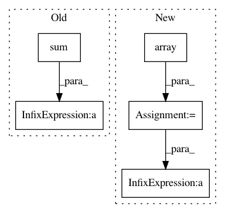

20769173fc5100fd8b60ca7d77a0b7dd5d6225fd,skbio/tree/_nj.py,,_compute_q,#Any#,172
Before Change
for i in range(n):
for j in range(i):
q[i, j] = q[j, i] = \
((n - 2) * dm[i, j]) - dm[i].sum() - dm[j].sum()
return DistanceMatrix(q, dm.ids)
def _compute_collapsed_dm(dm, i, j, disallow_negative_branch_length,
After Change
q = np.zeros(dm.shape)
n = dm.shape[0]
dmv = dm.to_data_frame().values
big_sum = np.array([dmv.sum(1)] * dm.shape[0])
big_sum_diffs = big_sum + big_sum.T
q = (n - 2) * dmv - big_sum_diffs
np.fill_diagonal(q, 0)
return DistanceMatrix(q, dm.ids)
In pattern: SUPERPATTERN
Frequency: 3
Non-data size: 5
Instances
Project Name: biocore/scikit-bio
Commit Name: 20769173fc5100fd8b60ca7d77a0b7dd5d6225fd
Time: 2017-04-24
Author: sdbrown@gmail.com
File Name: skbio/tree/_nj.py
Class Name:
Method Name: _compute_q
Project Name: theislab/scanpy
Commit Name: ee1ef70a4651670a146a65387b3d117099680aab
Time: 2019-04-01
Author: malte.luecken@icb-lisa.scidom.de
File Name: scanpy/tools/_marker_gene_overlap.py
Class Name:
Method Name: marker_gene_overlap
Project Name: astroML/astroML
Commit Name: f388923837f92a9de81b97898eadde495353331b
Time: 2018-11-16
Author: bsipocz@gmail.com
File Name: astroML/density_estimation/gauss_mixture.py
Class Name: GaussianMixture1D
Method Name: __init__